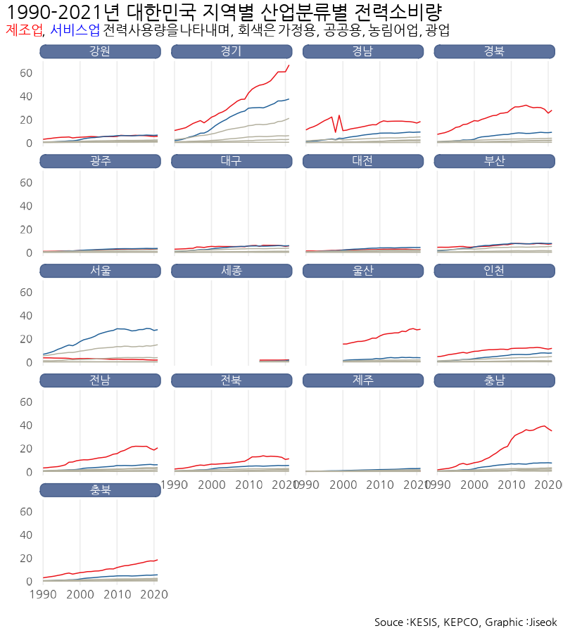
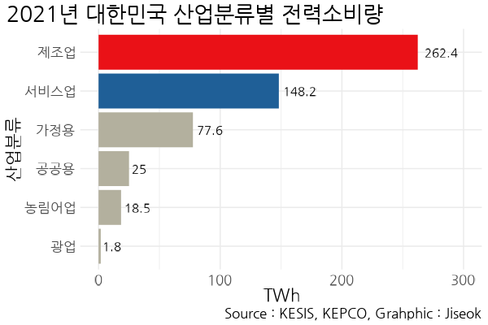
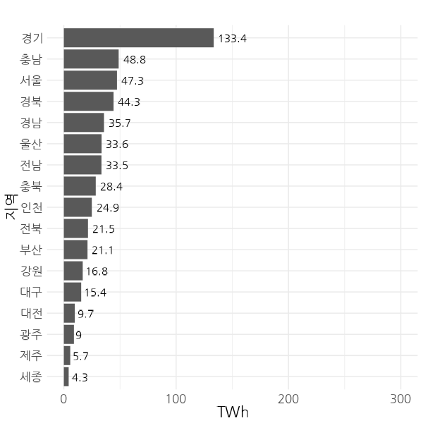
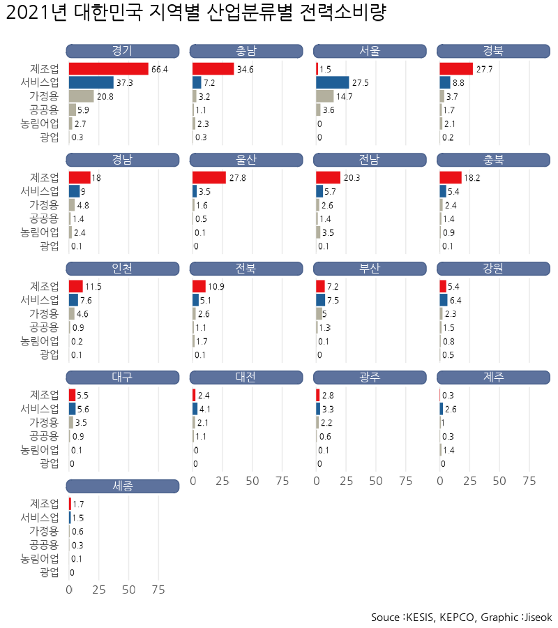

Code
knitr::opts_chunk$set(echo = TRUE, fig.width = 10, fig.height = 5)한국에너지기술연구원 정책연구실
August 18, 2023
환영합니다.
callout-note 테스트입니다. 작동 되나요??
callout-note 테스트입니다. 작동 되나요??
# A tibble: 3,264 × 4
region type year GWh
<chr> <chr> <chr> <dbl>
1 서울 가정용 1990 5183.
2 서울 가정용 1991 5498.
3 서울 가정용 1992 5976.
4 서울 가정용 1993 6448.
5 서울 가정용 1994 7116
6 서울 가정용 1995 7299.
7 서울 가정용 1996 7687.
8 서울 가정용 1997 8069.
9 서울 가정용 1998 8041.
10 서울 가정용 1999 8518.
# ℹ 3,254 more rows[1] "가정용" "공공용" "서비스업" "농림어업" "광업" "제조업" Loading required package: sysfontsLoading required package: showtextdbRegistering fonts with R
Attaching package: 'extrafont'The following object is masked from 'package:showtextdb':
font_install[1] "제조업" "서비스업" "가정용" "공공용" "농림어업" "광업" 2021년 지역별 산업별 전력소비량을 알아보자.
Quarto에서 r code chunk를 활용해 이미지를 추출하면 해상도 문제가 발생한다. 비슷한 문제를 갖는 사람들이 많은 거 같은데, 해결법은 잘 모르겠다. 그렇기 떄문에 이미지는 R에서 추출하여서 Quarto figure로 가져오는 것이 바람직한 방법일 것이다.

공백 추가하하는 건 스페이스 두 개


지역별 산업분류별로 구분해보면 차이를 확인할 수 있다. 서울의 경우에는 제조업의 전력소비량이 거의 없고 서비스업이 큰 비중을 차지하고 있다.
